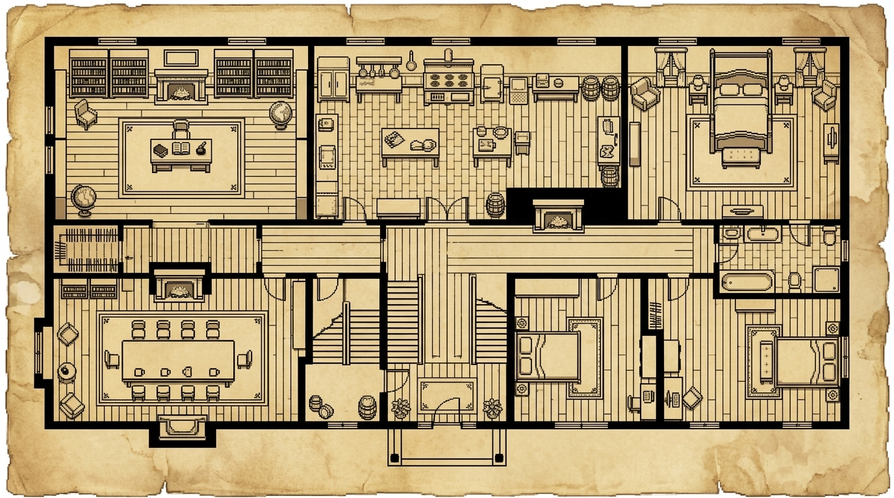

🔊
PLANTA DA MANSÃO RAVENWOOD
Selecione o cômodo que deseja investigar:

BIBLIOTECA
COZINHA
SALA DE REUNIÃO
QUARTO DO THOMAS
QUARTO DA VANESSA
QUARTO DA ELENA
← VOLTAR AO MENU PRINCIPAL
NOME DO LOCAL
"..."
← VOLTAR À PLANTA DA MANSÃO
📖 CADERNO
✖
CADERNO DE ANOTAÇÕES
Nenhuma anotação registrada ainda.